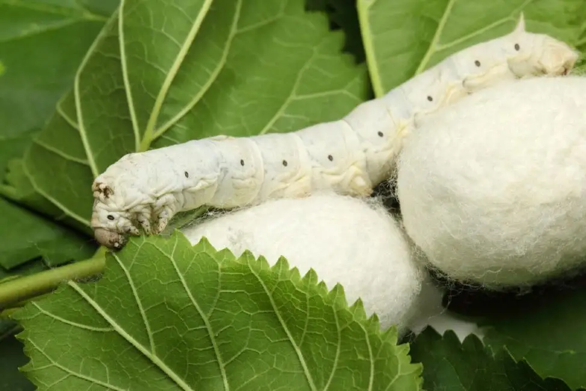

Sobre a sirecultura
A sericultara é a arte de criar bicho-da-seda. Teve sua origem na China, quando a esposa do Imperador, descobriu a arte de desfiar o casulo do bicho-da-seda.
Além de gerar emprego na agricultura famíliar, ela gera 21% da soma de toda riqueza produzida no pais.
Apartir dela, gera a seda, que é considerada uma fibra, cada casulo pode produzir cerca de 800 a 900 metros de fio de seda.
A seda é usada para produzir roupas, tapetes, cortinas,e outros objetos de luxo. O fio de seda possui um brilho lindo, que gera roupas deslumbrantes.
Através do conheciento sobre o ciclo de vida do bicho-da-seda, o manejo adequado de pragas e doenças, a busca pela sustentabilidade
e a constante inovação tecnológica, a sericultura pode continuar a prosperar e contribuir para o bem-estar da sociedade.
-------------------------------------------------------------------------------------------------------------------------------------------------------------------------------------------------------------------------------------------------------------------------------------

Tipos de bicho-da-seda
Bombyx Mori
O Bombyx Mori é um tipo mais comum de bicho-da-seda, sendo domesticado há milhares da anos. É uma espécie especilizada na produção de seda, e sua alimentação se restringe em folhas de amoreira.
Antheraea Assama
Conhecido como bicho-da-sedade Assama, produz uma seda de cor amarela, conhecida como Muga, é encontrado na região do Nordeste e da India, sendo um importante componente da cultura local.
Attacus Atlas
O bicho-da-seda Atlas é conhecido por seu casulo de seda de cor marrom e tamanho gigante, que pode atingir até 15 cm. É encotrado nas áreas tropicais da Ásia, e sua seda é ultilizada em artesanatos e bordados.
-----------------------------------------------------------------------------------------------------------------------------------------------------------------------------------------------------------------------------------------------------------------------------------------------------------------------------------------------------------------------------------------------------
Importância economica
Emprego
A sericltura gera empregos em diversas áreas. Essas atividades contribuem para o desenvolvimento socieconômico de sociedades rurais
Comércio Internacional
A seda é um produto comercializado globalmente, com grande demanda em mercados internacionais. A sericultura contribui para a economia d vários paises, gerando receita através da exportação de seda.